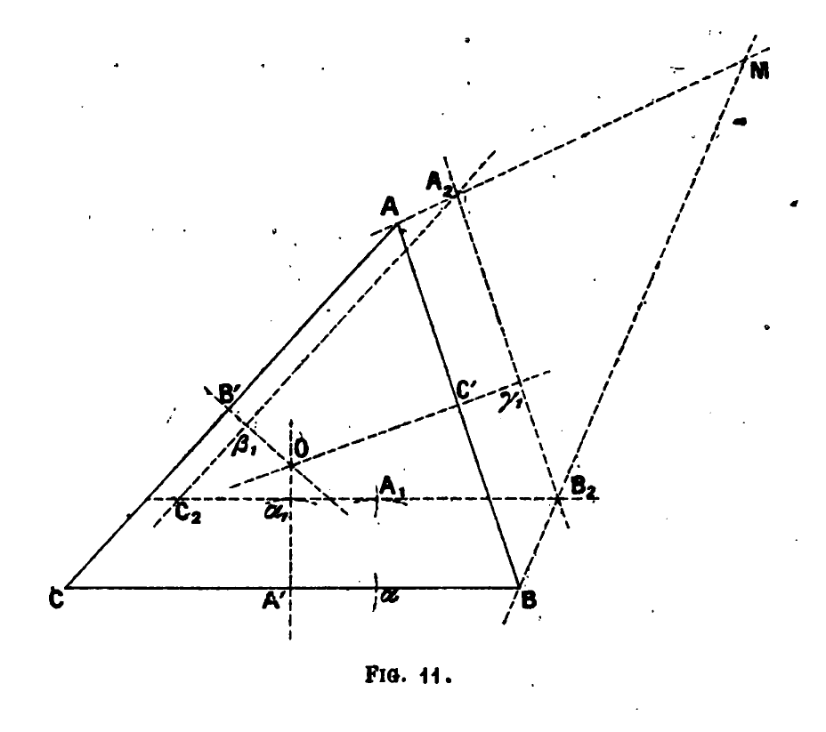

Problème XLIX : Point déterminé par ses coordonnées normales¶
Émile Lemoine — La Géométrographie (Texte français de référence, pp. 40–42, fols. 0056–0058)
La nouvelle géométrie du triangle rend encore plus évident combien il est indispensable de s’occuper systématiquement de l’art des constructions, car tout ce qui se rapporte à elle, en fait de constructions, revient en dernière analyse à la construction des points remarquables, c’est-à-dire de ceux dont les coordonnées normales [*] présentent, exprimés en fonction des éléments du triangle, une symétrie tournante.
Or, chaque propriété trouvée pour un point, donne une construction de ce point plus ou moins simple, plus ou moins directe ; il est donc nécessaire de classer ces constructions, de présenter la plus simple pour déterminer chaque point remarquable étudié dans cette géométrie et de connaître les principales constructions parmi les autres moins simples, mais qui pourront devenir fréquemment les plus simples dans tels ou tels tracés d’ensemble.


Le premier problème à résoudre dans la géométrie du triangle où les diverses coordonnées employées doivent se traduire pour les solutions graphiques en coordonnées normales est le suivant :
XLIX. — Placer un point M dont on connaît les coordonnées normales proportionnelles \(l, m, n\), par rapport au triangle de référence ABC.
Je suppose que \(l, m, n\) sont des droites (autrement il faudrait déterminer d’abord des droites proportionnelles à ces quantités, nous en donnons plus loin un exemple).
a) Je trace (fig. 11) trois perpendiculaires, une à chaque côté, en
f. 0057 · p. 41décrivant des sommets trois cercles d’un même rayon suffisant mais quelconque. Les intersections de ces cercles deux à deux donnent les trois médiatrices, il est évident que les rayons des trois cercles n’ont pas besoin d’être égaux pour tracer des perpendiculaires qui ne seraient pas les médiatrices, mais c’est plus commode \(\mathrm{op.} : (6R_1 + 3R_2 + 3C_1 + 3C_3)\).
Sur chaque côté du triangle, BC par exemple, je prends le pied A de la perpendiculaire menée à ce côté et je détermine le sommet A opposé à A d’un carré \(A' a A_1 \alpha_1\) de côté \(l\) dont les côtés seraient dirigés suivant AB et la perpendiculaire à AB menée en A. Je trace \(A_1 \alpha_1\), j’ai ainsi fait \(\mathrm{op.} : 3\left[2R_1 + R_2 + 5C_1 + 3C_3\right]\). Les trois lignes \(A_1 \alpha_1, B_1 \beta_1, C_1 \gamma_1\) déterminent un triangle \(A_2 B_2 C_2\) homothétique à ABC ; le centre d’homothétie que j’obtiens par \(\mathrm{op.} : (4R_1 + 2R_2)\), est le point M cherché.
Symbole de l’opération totale :
Nous avons traité la même question (Bulletin de la Soc. math., 1888, p. 163), en nous appuyant sur le même principe géométrique (c’est-à-dire que le point M appartient au lieu des points dont le rapport des distances à BC et à CA est \(\frac{l}{m}\), etc.) ;
Nous trouvions pour symbole :
Cette construction est moins simple que la précédente ; de plus, dans l’article cité, nous n’en avions pas même tiré le meilleur parti possible.
Je ferai remarquer à ce propos qu’il ne nous vient pas à l’idée que nous fixons ici les symboles fondamentaux de l’art de la construction géométrique, comme si nous donnions les constructions définitivement les plus simples, car :
1° Un autre géomètre pourra trouver une meilleure interprétation graphique de la solution que nous avons adoptée ;
2° Il pourra imaginer une autre solution conduisant à un meilleur résultat ; disons même que les constructions ne pourront jamais être théoriquement fixées, puisqu’il n’y a aucun critérium pour reconnaître si une solution est la plus simple qu’il soit possible et si elle est conduite graphiquement le mieux possible ; mais pratiquement la chose sera bientôt faite quand les géomètres auront dirigé leur attention sur un sujet aussi clair et aussi nettement défini ; il suffira d’enregistrer chaque perfectionnement, l’on aura rapidement les résultats effectivement définitifs.
b) Les coordonnées normales \(l, m, n\) sont des coordonnées normales absolues et l’on en connaît deux, \(l\) et \(m\) par exemple :
1° Je prends \(l\) \(\mathrm{op.} : (2C_1)\).
Je décris Cl et je mène les deux perpendiculaires en C à CA et
f. 0058 · p. 42à CB \(\mathrm{op.} : (4R_1 + 2R_2 + 5C_1 + 5C_3)\).
Je prends \(m\) que je porte dans le sens convenable en \(C\mu\) sur la perpendiculaire à CA ; ce transport n’a pas besoin d’être fait pour \(l\) qui se trouve placé sur le cercle Cl \(\mathrm{op.} : (3C_1 + C_3)\).
Par les extrémités ainsi obtenues de \(l\) et de \(m\), je mène des perpendiculaires aux droites qui joignent ces extrémités à C (XX 2° b) \(\mathrm{op.} : (8R_1 + 4R_2 + 2C_1 + 2C_3)\). Elle se coupent au point cherché.
2° Je trace un cercle passant par C au moyen duquel je trace les deux perpendiculaires à CB et à CA menées en C (XX 2° b, en économisant \(C_1 + C_3\) puisqu’un seul cercle suffit) \(\mathrm{op.} \left(8R_1 + 4R_2 + C_1 + C_3\right)\).
Sur ces perpendiculaires, je place dans le sens convenable les coordonnées \(l\) et \(m\) \(\mathrm{op.} : (6C_1 + 2C_3)\), et, comme dans la construction précédente, je trace par les extrémités ainsi obtenues des perpendiculaires aux droites qui joignent ces extrémités à C \(\mathrm{op.} : (8R_1 + 4R_2 + 2C_1 + 2C_3)\).
Chaque point remarquable peut évidemment se construire quand on a l’expression de ses coordonnées normales, mais cette construction est toujours beaucoup plus compliquée que d’autres qui se déduisent des propriétés du point. Nous allons en donner quelques exemples.